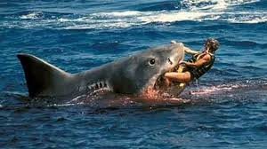

TIBURON BLANCO

El tiburón blanco es la especie más temida de todas. Su nombre científico es el de Carcharodon charcharias y su nombre común, además de tiburón blanco, es el de jaquetón o puntero blanco.
Pertenece a la familia de los lámnidos, tiburones rápidos y activos.
Algunos tienen mecanismos para aumentar la temperatura de su cuerpo.
Su longitud suele ser de unos seis metros y pueden alcanzar los 40 kilómetros a la hora, lo que le permite saltar fuera del agua y alcanzar a otros mamíferos marinos, como focas, que se encuentran sobre las rocas. Aunque su velocidad media es de 3 km/hora.
Tenemos constancia de la especie desde hace más de 60 millones de años.
Su alimentación va desde pequeños peces hasta aves marinas, tortugas, otros mamíferos marinos, incluso otros tiburones.
Su reproducción es ovovivípara. Alcanzan su madurez sexual a los 10-12 años de edad y tienen entre seis y siete crías. Cuando la hembra expulsa a los tiburones, que miden aproximadamente un metro y medio de longitud, deben vivir independientes a partir de ese momento.
Tienen cinco filas de dientes y poseen un oído muy sensible y fino capaz de percibir los movimientos de otros peces.
La película de “Tiburón”, de Steven Spielberg en 1975 ha contribuido de forma importante en la fama de agresivos de estos animales.
Después de la orca, es el mayor depredador que existe, gracias a su fuerza y velocidad en el ataque.
Son animales de sangre fría, pero gracias a su actividad muscular, pueden mantener la temperatura de su cuerpo alrededor de los 14 grados centígrados. Este hecho les facilita la digestión.
La media de vida de estos tiburones se sitúa sobre los 30 años de edad.
El tiburón blanco está incluido en la lista de animales protegidos en partes de los EE.UU y en Australia, aunque todavía no se ha conseguido eliminar su pesca ilegal.
Aproximadamente, existen unos 200 ejemplares en Australia y unos 1.500 en Sudáfrica.
PRINCIPAL